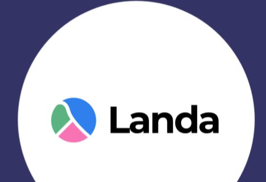

Heitor Mobílio
FP&A • Estratégia • Planejamento Financeiro
São Paulo, SP · +55 11 94587-7977 · hmobilio@gmail.com · linkedin.com/in/heitor-mobilio
Currículo completo abaixo. Baixe o PDF no topo ou ao final da página.
Executive Profile
Líder de FP&A, estratégia e planejamento com trajetória em empresas de tecnologia, marketplaces e operações em transformação, incluindo Decolar, VOLL, Rappi, iFood e Porto. Combino rigor analítico, visão de negócio e capacidade de execução para converter dados complexos em decisões que elevam rentabilidade, previsibilidade e crescimento.
Experiência em gestão de P&L, construção de governança, modelagem financeira, cenários multivariados, eficiência operacional, integrações pós-M&A e transformação financeira. Comunicação recorrente com CEOs, CFOs, Boards e lideranças de negócio.
Key Skills
Gestão de P&L · FP&A e Business Partnering · Planejamento estratégico · Orçamento, forecast e cenários · Modelagem financeira · OKRs e FCA · Unit economics, LTV/CAC e rentabilidade · Data analytics e dashboards · Burn reduction e turnaround · Integrações pós-M&A · IA e automação de rotinas e análises
Professional Experience

Landa Club- Membro da Turma 20 em comunidade de profissionais seniores que atua como conselheiros, advisors e aceleradores de empresas; contribuição em frentes de finanças, estratégia e crescimento.
 Decolar · Online Travel Agency (Grupo Prosus)
Decolar · Online Travel Agency (Grupo Prosus)- Liderança da área de Planejamento e Estratégia e gestão do P&L B2C Brasil: R$ 16 bilhões em Gross Bookings e R$ 300 milhões de receita anual.
- Estruturação da área, Reporting Pack ao Board da Despegar e condução do acompanhamento tático semanal do mapa estratégico B2C, com reporte matricial ao CEO Brasil.
- Evolução do modelo de gestão Prosus, baseado em OKRs e FCA (Fato, Causa e Ação), integração com a Prosus e adoção de IA e automação para acelerar análises e insights.
 VOLL · Traveltech B2B (L&CO / Localiza)
VOLL · Traveltech B2B (L&CO / Localiza)- Liderança das equipes de FP&A e Contabilidade, gestão de P&L de R$ 1,5 bilhão em GMV e reporting à Diretoria VOLL e ao Conselho da Localiza.
- Elevou a acurácia do forecast de EBITDA de 80% para 98% e das projeções de receita de 89% para 99%, por meio de governança centralizada e dashboards de validação diária.
- Reduziu o fechamento contábil de 6 para 3 dias úteis e liderou a implementação e auditoria do módulo de receitas do ERP Benner.
 Rappi · Marketplace de Delivery
Rappi · Marketplace de Delivery- Liderança de FP&A e gestão de P&L de R$ 1 bilhão em GMV; Business Partner de Logística, Marketing e Comercial, com reports semanais para a matriz na Colômbia e Diretoria Brasil.
- Conduziu o projeto de burn reduction que levou a operação brasileira ao breakeven em 9 meses, com ganhos de eficiência desde os três primeiros meses e reconhecimento individual.
- Finance Business Partner da integração da Box Delivery: reduziu o custo unitário de entrega para aproximadamente 70% da média anterior por meio de KPIs, P&L por cliente e análise granular de remuneração.
 Olho Mágico / Porto · Proptech
Olho Mágico / Porto · Proptech- Gestão de budget e P&L com burn rate anual de R$ 30 milhões e reportes mensais à Diretoria Porto sobre runway, rentabilização, sinergias e riscos do negócio.
- Reduziu o burn mensal de R$ 3 milhões para R$ 170 mil em três meses em contexto de downsizing; conduziu a comunicação executiva e o realinhamento entre Nido Tecnologia e Porto.
- Incorporou Data Analytics à área financeira e criou guardrails de produto e design para rolling forecasts e ações corretivas mais ágeis.
 iFood · Marketplace de Delivery
iFood · Marketplace de Delivery- Liderança da equipe de Business Partners de FP&A e parceria financeira com Marketing e Comercial, incluindo modelagem de novos produtos e análises de viabilidade.
- Durante a pandemia, modelou e executou iniciativa que injetou mais de R$ 1 bilhão de fluxo de caixa em mais de 45 mil restaurantes, além de conceder mais de R$ 60 milhões em descontos.
- Geriu planejamento de Marketing (R$ 1 bilhão/ano) e Vendas (R$ 120 milhões/ano); implementou análises de LTV/CAC e framework de controle orçamentário adotado na revisão semanal do CMO.
Earlier Experience
- Serasa Experian · Analista Financeiro e Analista Financeiro Sênior (jun. 2019 – nov. 2020): processo orçamentário, P&L de Marketing e Comercial, business cases, KPIs e otimização de incentivos de vendas.
- Bosch · Estagiário (dez. 2014 – out. 2015).
Education & Languages
- Board Academy · Programa de Formação e Certificação de Conselheiros (PFFC), 2025.
- IBMEC · Finanças com IA, 2025.
- Universidade Estadual de Campinas (UNICAMP) · Bacharelado em Economia, 2013 – 2017.
- Idiomas: Português nativo; inglês fluente; espanhol fluente.